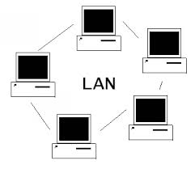
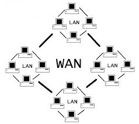

tipi rete html <title>
<meta charset='UTF-8'>
<style>
table td{
border: solid 2px black;
}
body {background-color:#000000}
a {color:#ff00ff}
<table>
table td{
border: solid 2px black;
}
body {background-color:#0000ff}
{color:#ff00ff}
<tr>
<td> lan </td>
<td> </td>
<td> (local area network) e una rete di piccole dimensioni normalmente copre una stanza o piccoli edifici.
1)è una rete semplice 2 e facililmente estensioni.E adatta per piccole aree
2)ha una sicurezza limitata </td>
</tr>
<tr>
<td> CAN </td>
<td> <img src=""></td>
<td> una can è famosa è una rete più grande e compressa di una lan copre nolmarmente più posti vicini e è composta da sotto reti lan
è piu sicura di una lan
consente la condivisione di risorse anziendali senza accesso a internet
1) è normalmente costosa
2) è normalmente più complessa da gestire </td>
</tr>
<tr>
</tr>
<tr>
<td> man </td>
<td> </td>
<td> è una rete che copre parti di una città.
è normalmente composta sottorete da can </td>
</tr>
<tr>
<td> wan </td>
<td> </td>
<td> è una rete che copre parti regioni della terra </td>
</tr>
<tr>
<td> wlan </td>
<td> </td>
<td> </td>
</tr>
</table>
</body>
</html>
</head>
</style>